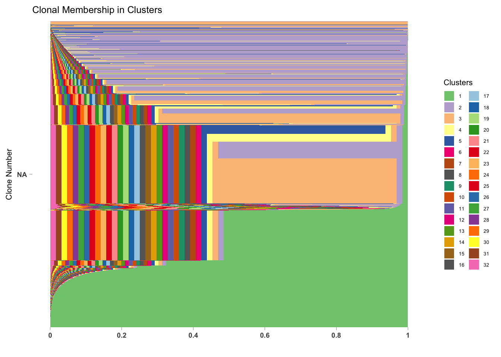

first-analysis
surbut
2018-09-28
Last updated: 2018-10-22
workflowr checks: (Click a bullet for more information)-
✔ R Markdown file: up-to-date
Great! Since the R Markdown file has been committed to the Git repository, you know the exact version of the code that produced these results.
-
✔ Environment: empty
Great job! The global environment was empty. Objects defined in the global environment can affect the analysis in your R Markdown file in unknown ways. For reproduciblity it’s best to always run the code in an empty environment.
-
✔ Seed:
set.seed(20180928)The command
set.seed(20180928)was run prior to running the code in the R Markdown file. Setting a seed ensures that any results that rely on randomness, e.g. subsampling or permutations, are reproducible. -
✔ Session information: recorded
Great job! Recording the operating system, R version, and package versions is critical for reproducibility.
-
Great! You are using Git for version control. Tracking code development and connecting the code version to the results is critical for reproducibility. The version displayed above was the version of the Git repository at the time these results were generated.✔ Repository version: 35ec427
Note that you need to be careful to ensure that all relevant files for the analysis have been committed to Git prior to generating the results (you can usewflow_publishorwflow_git_commit). workflowr only checks the R Markdown file, but you know if there are other scripts or data files that it depends on. Below is the status of the Git repository when the results were generated:
Note that any generated files, e.g. HTML, png, CSS, etc., are not included in this status report because it is ok for generated content to have uncommitted changes.Ignored files: Ignored: .DS_Store Ignored: .Rhistory Ignored: .Rproj.user/ Ignored: analysis/.DS_Store Ignored: analysis/.Rhistory Ignored: analysis/Pearson_cache/ Ignored: docs/figure/
Expand here to see past versions:
| File | Version | Author | Date | Message |
|---|---|---|---|---|
| Rmd | 35ec427 | surbut | 2018-10-22 | all |
| html | 35ec427 | surbut | 2018-10-22 | all |
| Rmd | fa05c3c | surbut | 2018-10-22 | Updated with proportional membership pi chart and cleaned up some things |
| html | fa05c3c | surbut | 2018-10-22 | Updated with proportional membership pi chart and cleaned up some things |
| Rmd | 697d19a | surbut | 2018-10-17 | Updated |
| html | 697d19a | surbut | 2018-10-17 | Updated |
| Rmd | c336d00 | surbut | 2018-10-17 | Updtate all figures |
| html | c336d00 | surbut | 2018-10-17 | Updtate all figures |
| Rmd | cf77993 | surbut | 2018-10-17 | Update with K=5 |
| html | cf77993 | surbut | 2018-10-17 | Update with K=5 |
| html | 2f79c7e | surbut | 2018-10-16 | Updated |
| Rmd | eac0bc1 | surbut | 2018-10-16 | Updated |
| html | eac0bc1 | surbut | 2018-10-16 | Updated |
| Rmd | ffb1929 | surbut | 2018-10-16 | Updated with different dimenson |
| html | ffb1929 | surbut | 2018-10-16 | Updated with different dimenson |
| Rmd | 456103f | Sarah Urbut | 2018-10-15 | Changed color scheem .. but there are bigger problems |
| html | 456103f | Sarah Urbut | 2018-10-15 | Changed color scheem .. but there are bigger problems |
| Rmd | 9db8746 | Sarah Urbut | 2018-10-15 | Updated PCA plots |
| html | 9db8746 | Sarah Urbut | 2018-10-15 | Updated PCA plots |
| Rmd | 7b48729 | surbut | 2018-10-01 | Updated with PC plots |
| html | 7b48729 | surbut | 2018-10-01 | Updated with PC plots |
| Rmd | 67f7cdc | surbut | 2018-09-28 | Updated with PC plots and clusters |
| html | 67f7cdc | surbut | 2018-09-28 | Updated with PC plots and clusters |
| html | d81f2a6 | surbut | 2018-09-28 | Build site. |
| Rmd | dfaca59 | surbut | 2018-09-28 | modified_file_path |
R Markdown
In this experiment, the tail vein of a mouse is transfected with an ovarian tumor cell-pellet “seed”, and all the cells are labeled ‘clones.’ We seek to identify patterns of migration through a Grade of Memebrship model, in which clones are assigned proportional memberhsip in one of k clusters, and each cluster is characterized by a particular pattern of enrichment across tissues. Because these enrichments represent the replications potential of each clone, we might then infer an ordinal relationship such that the highest level of enrichment must also represent the first ‘stop’ in the cluster, allowing increased cell divisions.
#install.packages("workflowr")
#library("workflowr")
#temp = list.files(path="~/Dropbox/Pearson_Data/Data/",pattern="Decon*",full.names = TRUE)
mat=read.csv("~/myproject/data/M3_Mouse.csv",header = T)[,-1];
rownames(mat)=mat[,1];mat=mat[,-1]We can see that the barcodes are in the rows and the tissues are in the columns, and that the dimensions are as follow. WE are limited to K=5.
Lung Liver Right.Ovary Left.Ovary Adrenal
bar|1 9115 11 13 0 0 0
bar|11 16195 2 0 0 0 0
bar|15 4514 3 0 0 0 0
bar|17 4877 155 0 0 0 1
bar|19 4445 13 0 0 0 0
bar|20 4536 1 0 0 0 0There are 5 unqiue barcodes. Noww we install some packages necessary for the GOM model according to CountClust vignette.
Loading required package: ggplot2To fit for multiple K, we apply the following model and consider how the different clones fall into patterns characterized by tissue-sepcific expression. We cna see that each cluone can have membership in up to 10 clusters, where each cluster is characterized by predilection to a particular tissue or group of tissues. WE can then consider which clusters are most popular, and examine the tissue patterns they demonstrate.
#fits <- lapply(2:10, function(k) FitGoM(mat,K=k, tol=1))## try over different Ks
fit=FitGoM(mat,K=5, tol=1)$fitoptions not specified: switching to default BIC, other choice is BF for Bayes factorFitting a Grade of Membership model
(Taddy M., AISTATS 2012, JMLR 22,
http://proceedings.mlr.press/v22/taddy12/taddy12.pdf)
Estimating on a 23651 document collection.
Fit and Bayes Factor Estimation for K = 5
log posterior increase: done.
log BF( 5 ) = 259125870.41omega <- fit$omega
# annotation <- data.frame(
# sample_id = rownames(omega),
# tissue_label = factor(rownames(omega),
# levels = rownames(omega)))
#
# rownames(omega) <- annotation$sample_id;
#
#
# sample_id <- rownames(omega)
#annotation$sample_id <- as.character(annotation$sample_id)
StructureGGplot(omega = omega,
#annotation = annotation,
palette = c(brewer.pal(8, "Accent")),
yaxis_label = "Clone Number",
order_sample = TRUE,
#sample_order_opts=4,
axis_tick = list(axis_ticks_length = .1,
axis_ticks_lwd_y = .1,
axis_ticks_lwd_x = .1,
axis_label_size = 7,
axis_label_face = "bold"),figure_title = "Clonal Membership in Clusters")
Expand here to see past versions of unnamed-chunk-4-1.png:
| Version | Author | Date |
|---|---|---|
| 697d19a | surbut | 2018-10-17 |
| cf77993 | surbut | 2018-10-17 |
| ffb1929 | surbut | 2018-10-16 |
We can examine the omega matrix to try and understand the proportional membership of every clone, and overall enrichemnt of each cluster.
head(omega[1:10,]) topic
document 1 2 3 4 5
bar|1 9115 0.4440247 0.008000000 0.528522179 0.010480072 0.008973015
bar|11 16195 0.7333333 0.066666667 0.066666667 0.066666667 0.066666667
bar|15 4514 0.8000000 0.050000000 0.050000000 0.050000000 0.050000000
bar|17 4877 0.9880867 0.001273885 0.001318551 0.001733266 0.007587599
bar|19 4445 0.9428571 0.014285714 0.014285714 0.014285714 0.014285714
bar|20 4536 0.6000000 0.100000000 0.100000000 0.100000000 0.100000000For example, clone with barcode 1_9115 has 44% membership in cluster 1, 52.8% membership in cluster 3, and trivial membership in other clusters. To look at overall proportions of membership in each cluster, we can consider the overall proportion of clones (weighted by their cluster memebrship) in eahc cluster. WE see that Cluster 1 is the most popular followed by cluster 2, etc.
pie(colSums(omega/nrow(mat)),main="Cluster Membership",col=brewer.pal(8, "Accent"))
Expand here to see past versions of unnamed-chunk-6-1.png:
| Version | Author | Date |
|---|---|---|
| 9db8746 | Sarah Urbut | 2018-10-15 |
| d81f2a6 | surbut | 2018-09-28 |
We extract the top clones driving each cluster using the ExtractTopFeatures functionality of the CountClust package. We first perform the cluster annotations from the GoM model fit with k=5 on the clone data. We can see that some of the clusters have strong lung expression, and some have more tissue specific expression in adrenal, left ovary, liver or right ovary.

Session information
sessionInfo()R version 3.5.1 (2018-07-02)
Platform: x86_64-apple-darwin15.6.0 (64-bit)
Running under: macOS High Sierra 10.13.6
Matrix products: default
BLAS: /Library/Frameworks/R.framework/Versions/3.5/Resources/lib/libRblas.0.dylib
LAPACK: /Library/Frameworks/R.framework/Versions/3.5/Resources/lib/libRlapack.dylib
locale:
[1] en_US.UTF-8/en_US.UTF-8/en_US.UTF-8/C/en_US.UTF-8/en_US.UTF-8
attached base packages:
[1] stats graphics grDevices utils datasets methods base
other attached packages:
[1] lattice_0.20-35 dplyr_0.7.6 gplots_3.0.1
[4] RColorBrewer_1.1-2 CountClust_1.8.0 ggplot2_3.0.0
loaded via a namespace (and not attached):
[1] maptpx_1.9-2 Rcpp_0.12.18 ape_5.2
[4] gtools_3.8.1 assertthat_0.2.0 rprojroot_1.3-2
[7] digest_0.6.17 slam_0.1-43 R6_2.2.2
[10] plyr_1.8.4 backports_1.1.2 stats4_3.5.1
[13] evaluate_0.11 pillar_1.3.0 rlang_0.2.2
[16] lazyeval_0.2.1 rstudioapi_0.7 gdata_2.18.0
[19] whisker_0.3-2 vegan_2.5-2 R.utils_2.7.0
[22] R.oo_1.22.0 Matrix_1.2-14 rmarkdown_1.10
[25] stringr_1.3.1 munsell_0.5.0 compiler_3.5.1
[28] pkgconfig_2.0.2 SQUAREM_2017.10-1 mgcv_1.8-24
[31] htmltools_0.3.6 nnet_7.3-12 tidyselect_0.2.4
[34] tibble_1.4.2 workflowr_1.1.1 codetools_0.2-15
[37] permute_0.9-4 crayon_1.3.4 withr_2.1.2
[40] MASS_7.3-50 bitops_1.0-6 R.methodsS3_1.7.1
[43] grid_3.5.1 nlme_3.1-137 gtable_0.2.0
[46] git2r_0.23.0 magrittr_1.5 scales_1.0.0
[49] KernSmooth_2.23-15 stringi_1.2.4 reshape2_1.4.3
[52] flexmix_2.3-14 bindrcpp_0.2.2 limma_3.36.5
[55] cowplot_0.9.3 tools_3.5.1 picante_1.7
[58] glue_1.3.0 purrr_0.2.5 parallel_3.5.1
[61] yaml_2.2.0 colorspace_1.3-2 cluster_2.0.7-1
[64] caTools_1.17.1.1 knitr_1.20 bindr_0.1.1
[67] modeltools_0.2-22 This reproducible R Markdown analysis was created with workflowr 1.1.1